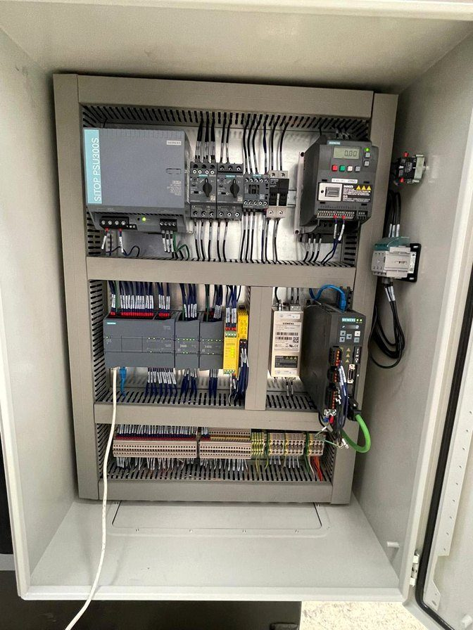
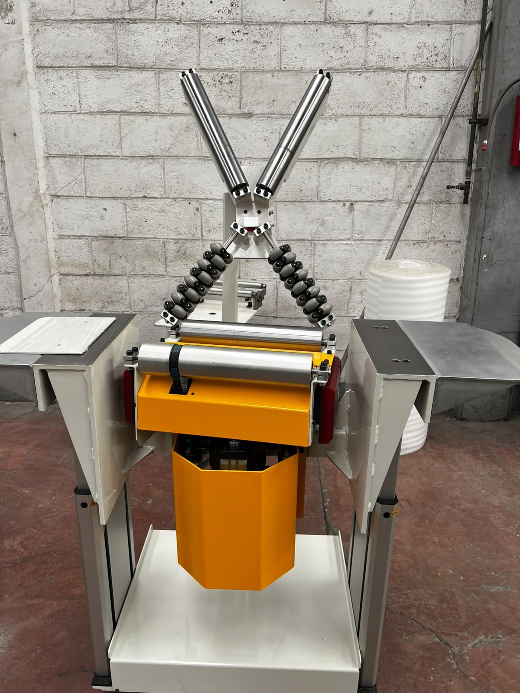
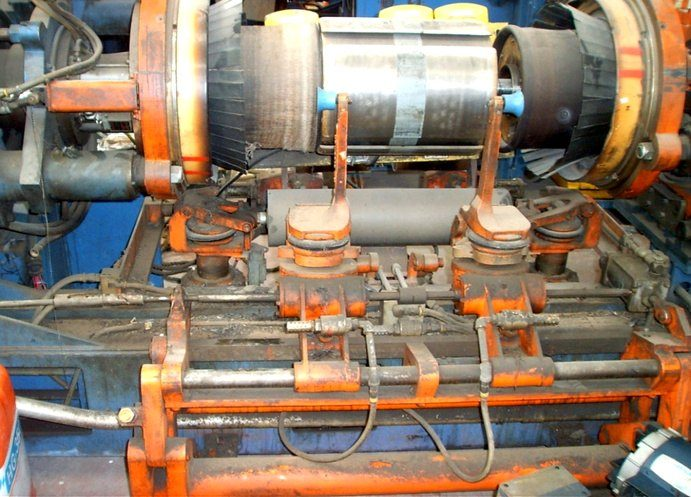
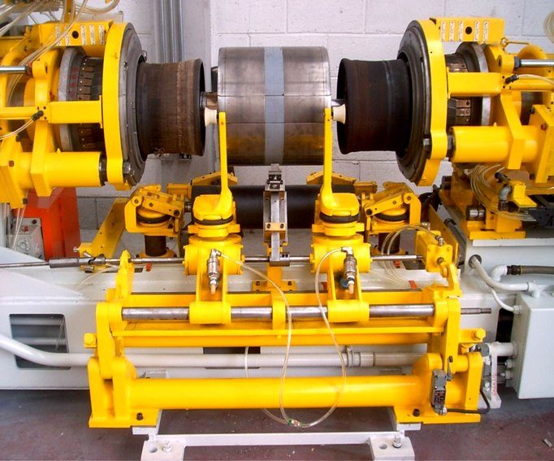
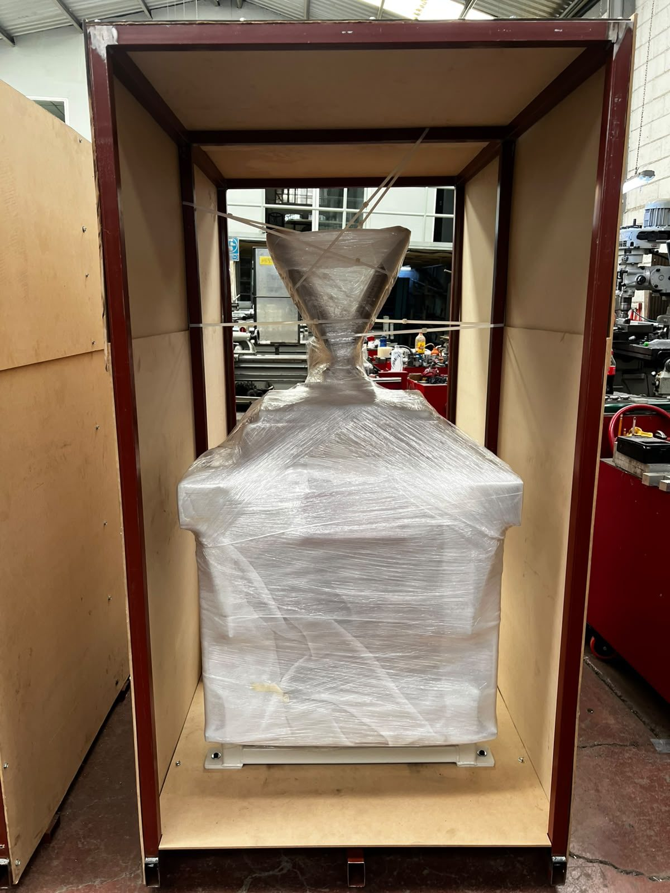

De la ingeniería al arranque, con un solo proveedor.
Hacemos la parte mecánica, la eléctrica y el control. Usted no coordina a tres proveedores ni cuadra responsabilidades cuando algo no jala.

Programamos, cableamos y arrancamos el control de su máquina.
En máquinas nuevas o en las que ya tiene en piso y necesitan un control moderno o más seguro.
- PLC Siemens S7-1200 y S7-1500 en TIA Portal, y Allen-Bradley.
- HMI y pantallas de operación.
- Tableros eléctricos diseñados en EPLAN.
- Variadores, servomotores y control de movimiento.
- Seguridad de máquina: cortinas, guardas con interlock y paros de emergencia.
La máquina que su línea necesita, entregada probada.
Partimos de su necesidad o de sus planos y nos hacemos cargo de la estructura, la mecánica, la neumática y el control.
- Levantamiento en planta y diseño en SolidWorks.
- Estructuras, bases y guardas de acero.
- Transportadores de banda y de rodillos, posicionadores y mesas de inspección.
- Neumática e hidráulica.
- Prueba funcional en nuestro taller con su equipo antes de embarcar.
- Instalación y puesta en marcha en su planta.


ANTES
DESPUÉSSu máquina de proceso, de vuelta a producción.
Para equipos desgastados que todavía tienen vida: los dejamos trabajando otra vez sin cambiar la máquina completa.
- Diagnóstico del estado mecánico y eléctrico.
- Desarmado, reparación y fabricación de piezas de reemplazo.
- Recableado y actualización de control.
- Pintura y señalización de seguridad.
- Arranque y entrega en su planta.
Fabricado en Querétaro, listo para cruzar fronteras.
Hemos enviado equipo a Estados Unidos, Canadá y Serbia, con la documentación que pide cada cliente.
- Fabricación según planos y especificaciones del cliente.
- Prueba con el cliente presente o validación remota.
- Placas de datos y documentación en inglés técnico.
- Reportes de avance durante la fabricación.
- Embalaje para transporte internacional.

También lo resolvemos
Maquinados CNC y piezas
Piezas de reemplazo y componentes para sus equipos, en acero, aluminio e inoxidable.
Mantenimiento preventivo y correctivo
Transmisiones, reductores, transportadores y cilindros neumáticos e hidráulicos. Emergencias 24/7.
Montaje, reubicación y puesta en marcha
Movemos, nivelamos e instalamos maquinaria con montacargas y plataforma de elevación propios.
Desmantelamiento de máquinas
Desenergizado, desmontaje y separación de componentes de forma segura, incluso en cierres de planta.
Instalaciones eléctricas
Charolas, tubería, acometidas y recableado de máquinas.
Importación de componentes
Conseguimos componentes y materiales del extranjero para sus proyectos.
De la primera visita a la máquina funcionando
- 01Visita y levantamientoVamos a su planta, vemos el problema y tomamos medidas.
- 02Ingeniería y cotizaciónProponemos la solución con alcance, tiempos y precio.
- 03FabricaciónFabricamos en nuestro taller y le enviamos reportes de avance.
- 04Prueba en tallerProbamos la máquina con su equipo antes de embarcarla.
- 05Instalación y arranqueInstalamos, arrancamos y se la entregamos funcionando.
¿Máquina parada o proyecto nuevo?
Mándenos fotos o planos por WhatsApp y le contestamos en menos de 24 horas.